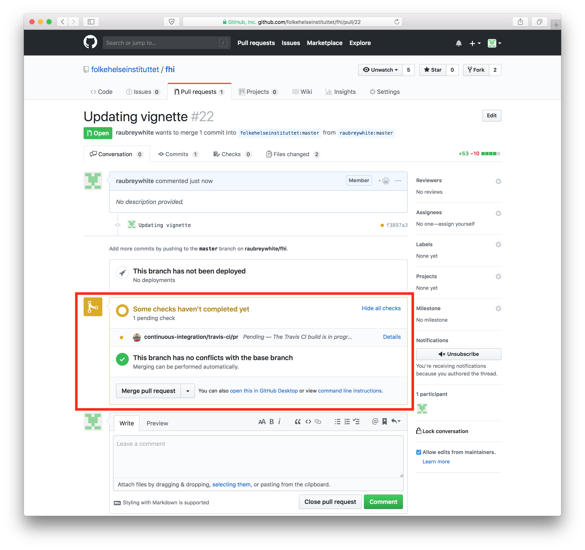

5 Contributing
5.1 Development guidelines
We try to follow the GitHub flow for development.
- Fork [this repo][repo] and clone it to your computer. To learn more about this process, see this guide.
Add the Folkehelseinstituttet repository as your upstream:
git remote add upstream https://github.com/folkehelseinstituttet/ORIGINAL_REPOSITORY.gitIf you have forked and cloned the project before and it has been a while since you worked on it, merge changes from the original repo to your clone by using:
git fetch upstream git merge upstream/master- Open the RStudio project file (
.Rproj). - Make your changes:
- Write your code.
- Test your code (bonus points for adding unit tests).
- Document your code (see function documentation above).
- Do an
R CMD checkusingdevtools::check()and aim for 0 errors and warnings. - Commit your changes locally
- Merge changes from the original repo (again)
- Do an
R CMD checkusingdevtools::check()and aim for 0 errors and warnings.
- Commit and push your changes.
- Submit a pull request.
If you are reviewing the pull request, wait until the travis-ci unit tests have finished

- Please make sure that the unit tests
PASSbefore merging in!!

5.2 Code style
- Function names start with capital letters
- Variable names start with small letters
- Environments should be in ALL CAPS
- Reference Hadley’s style code
- <- is preferred over = for assignment
- Indentation is with two spaces, not two or a tab. There should be no tabs in code files.
- if () {} else {} constructions should always use full curly braces even when usage seems unnecessary from a clarity perspective.
- TODO statements should be opened as GitHub issues with links to specific code files and code lines, rather than written inline.
Follow Hadley’s suggestion for aligning long functions with many arguments:
long_function_name <- function(a = "a long argument", b = "another argument", c = "another long argument") { # As usual code is indented by two spaces. }- Never use print() to send text to the console. Instead use message(), warning(), and error() as appropriate.
Use environment variables, not options(), to store global arguments that are used by many or all functions.